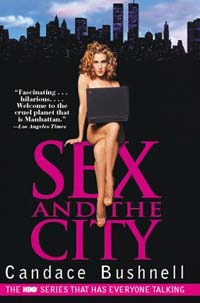
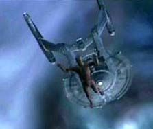
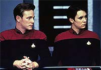
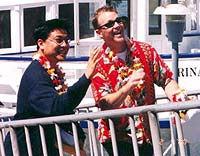
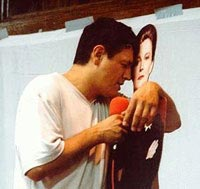
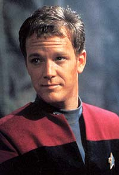
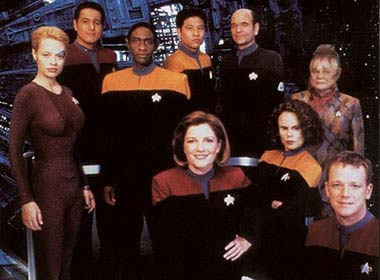
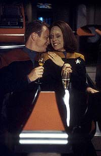

Trek
Brasilis - Vamos comear com sua recente experincia
dirigindo. Voc acabou de dirigir para Enterprise e
"Dawson's Creek", e esteve visitando os sets de "The
West Wing". Tambm j dirigiu Voyager. Como se
sente sobre esse incio de sua carreira de diretor? Voc sente
agora que um ator que dirige ocasionalmente, um ator e
diretor, ou um diretor que atua s vezes?
Robert Duncan McNeill - Bem, eu acho que neste momento eu
provavelmente estou pondo mais energia em dirigir do que atuar.
Ento eu diria que agora eu sou um diretor que atua
ocasionalmente. Eu adoraria continuar atuando, no que eu no
goste de atuar, apenas que eu acho que fiz atuao por
tanto tempo que dirigir um pouco mais novo e fresco e mais
empolgante para mim agora.
TB - E estando em trs sries
diferentes, como "Dawson's Creek", Enterprise e
"The West Wing", como voc sente as diferenas nos
ambientes desses trs shows?
McNeill - Bem, eu acho que cada srie de televiso tem
uma personalidade bem singular. Voc sabe, a srie toda ganha
uma vida prpria, de certo modo. Nosso set em Voyager
era como uma festa o tempo todo, voc sabe, estvamos rindo e
abobados e nos divertamos muito. Enterprise me lembra
muito do nosso elenco e da nossa srie, mas um pouco mais
concentrado e, talvez... uhhh... eu no sei como explicar,
mas... (pausa) Eles so mais novos em Jornada nas Estrelas,
voc sabe, ento eles so bem srios sobre isso agora, e
muito empolgados com as coisas que o elenco de Voyager
era no incio, mas nos acostumamos a Jornada nas Estrelas
e pudemos ento relaxar e nos divertirmos.
TB - Voc acha que, em Enterprise,
isso pode ser sentido na tela?
McNeill - Sim, eu acho, especialmente para o conjunto. No
Scott Bakula, mas o resto do conjunto, eu acho, eles so todos
muito, muito... a maioria deles inexperiente. Sabe o que
quero dizer? Eles no so estrelas da TV como Scott era. Ento
eles esto todos bastante empolgados de estar na srie, e a
histria de Jornada nas Estrelas toda muito
empolgante para eles, ento eu acho que isso se encaixa na
premissa da srie, de que a explorao do espao recente,
e, voc sabe, neste momento, h uma qualidade muito fresca
para o elenco e a sensao que eles tm.
TB - Os personagens esto to
empolgados quanto os atores, neste caso...
McNeill - Eu acho, sim. (risos) Eu acho que sim. Acho que
algo, voc sabe, eu me lembro que em Voyager ns sentamos
a mesma coisa, mas nossa srie era bem diferente, ramos
personagens que deveriam ser mais experientes com o espao. Voc
sabe, um pouco mais esgotados.
TB - Quais so as suas sries
favoritas nesse momento?
 McNeill
- Uhh... uau. Gostaria de poder ver mais televiso. Uhhh... Eu
amo "The West Wing", da a razo de eu perseguir
essa oportunidade. De que outras sries eu gosto? H uma srie
chamada "Family Law", e, uma srie de advogados,
mas, de novo, tem histrias desafiadoras e tem tpicos meio
que de notcias bem atualizados. De que outras sries eu
gosto? (pausa) Rapaz. Eu tenho visto muitos noticirios
recentemente. Mas de que outras sries eu gosto? Ah, eu
adoro... sabe que outra srie eu adoro? "Sex and the
City".
TB - Sim, com Kim Catrall?
McNeill - Sim, eu adoro essa srie. muito divertida
para mim. Eu gosto de "Sex and the City". Eu tambm
gosto de outra srie da HBO, chamada "Six Feet Under".
sobre um negcio caseiro familiar de funerais.
TB - Dos seus trabalhos de atuao,
qual foi o que voc gostou mais?
McNeill - Bem, acho que um dos meus trabalhos de atuao
de que mais gostei, eu fiz uma pea da Broadway, chamada "Six
Degrees of Separation". Era baseada em uma histria real
de um jovem meio que sem-teto que personificava o filho de
Sidney Poitier. E ele conseguiu que todas essas pessoas ricas da
cidade de Nova York acreditassem que ele era filho do Sidney
Poitier, e eles deram dinheiro a ele e lugares para morar, e era
uma pea bem esperta, e foi um grande sucesso na Broadway na poca.
TB - Quando foi?
McNeill - Isso foi em 1990, 91, por volta disso.
TB - Quais so seus planos para
projetos futuros?
McNeill - Bem, estou olhando para um par de filmes que
estou empolgado em dirigir. Ento isso est tomando muito da
minha energia. Estou saindo em algumas semanas para dirigir
"Dawson's Creek" novamente. Ento, espero que se
torne uma boa casa para mim. Adoraria dirigir alguns episdios
de "Dawson's Creek" sempre que pudesse.
TB - Voc tem algum outro Enterprise
tambm?
McNeill - No sei sobre isso. Eles no me ligaram de
novo, mas eu gostaria de fazer outro Enterprise.
TB - E como foi sua experincia em
"Cold Front"?
McNeill - Minha experincia l foi diferente do que
esperava. divertido quando voc um ator naquela srie, e
eu conhecia todos os outros atores muito bem, tnhamos atalhos,
voc sabe, eu poderia usar um exemplo de algo com que todos fssemos
familiares e eles pegariam a idia imediatamente. Com Enterprise,
tudo novo em folha, e eu no conheo os atores muito bem,
ento foi bem incomum. Fiquei surpreso em ver quo desafiador
foi, porque a maioria dos meus episdios de Voyager foi
um verdadeiro prazer, e eles foram trabalho duro, mas eles
foram... tudo fluiu junto suavemente, e o de Enterprise
foi um pouco mais desafiador.
 Mas
a outra coisa interessante foi que Enterprise, no episdio
que dirigi, era incomum para Jornada nas Estrelas, porque
no teve realmente um final. Voc sabe, normalmente no fim de
um episdio de Jornada nas Estrelas, h uma moral para
a histria e as coisas acabam meio que bem, e esse aqui foi
deixado com o final em aberto. Voc sabe, Silik escapa da Enterprise
e no h lio a ser aprendida, exceto a de que pode haver
mais problemas no caminho.
TB - Voc acha que esse tipo de
episdio est sinalizando que os produtores esto tentando
mudar algumas coisas que estavam estabelecidas em Jornada nas
Estrelas?
McNeill - Sim, eu acho. Eu acho que tradicionalmente,
desde a srie original, as histrias eram muito auto-contidas,
voc sabe, voc no precisava ver o episdio anterior para
saber a histria toda, se voc chegasse a um episdio de Jornada
nas Estrelas, voc veria uma histria completa e pegaria
uma boa moral, como em um bom antigo conto de fadas. Bem, a nova
srie Enterprise mais como um antigo serial, voc
sabe, voc tem de acompanhar o que est acontecendo semana a
semana, e os episdios no terminam sempre to limpamente.
TB - Como voc v a evoluo do
franchise Jornada nas Estrelas desde seu primeiro
envolvimento com ele?
McNeill - Eu fiz um episdio de A Nova Gerao
tambm, ento tenho memrias que vo desde... mais de oito
anos, desde 1991 ou 1992, no me lembro, quase dez anos agora.
Eu acho que o franchise mudou, de modos sutis, mas mudou. Eu
acho que quando A Nova Gerao estava no ar, Jornada
nas Estrelas era singular, no havia outras sries de fico
cientfica de que falar. As pessoas a viam com um olhar mais
fresco, voc sabe, elas no tinham visto nenhum Jornada nas
Estrelas em 25 anos, e agora havia alguns novos Jornada
nas Estrelas, ento era um pouco mais fresco. Acho que
agora j tivemos tanto, A Nova Gerao, Deep Space
Nine, Voyager, agora Enterprise, que... no
to fresco. Voc sabe, mesmo a audincia olha e compara a
outras sries de Jornada, eles falam sobre como eles j
viram isso antes, viram as mesmas histrias, os mesmo truques.
Ento ... eu no sei. Se eu fosse o cabea da Paramount,
talvez eu parasse de fazer sries de televiso por um tempo.
TB - Voc acredita que estamos
perto de atingir um ponto de saturao?
McNeill - Eu acho que seria melhor para o franchise a
longo prazo parar e tomar dois anos s para aproveitar os
frutos do trabalho que eles fizeram at agora. E talvez
permitir que eles se inspirem de um novo modo, de forma que
volte ainda mais diferente do que Enterprise. Enterprise
singular, diferente de Voyager, diferente de A
Nova Gerao, certamente tem sua prpria personalidade,
mas ainda estando to perto das outras sries, inevitavelmente
ir carregar muitos dos mesmos truques, dos mesmos estilos que
as outras sries usaram. Ento, eu acho que eles precisam se
afastar e fazer outras coisas e ento voltar.
TB - Antes de aparecer em A Nova
Gerao, voc gostava de Jornada nas Estrelas, era
um f?
 McNeill
- Eu no sabia nada sobre A Nova Gerao antes de
fazer. Eu no era realmente um f de fico cientfica,
honestamente. Ento, quando eu fiz a srie, foi muito novo
para mim. E eu me apaixonei por ela. Eu gostei dos atores,
gostei do tipo de qualidade maior que a vida do episdio que eu
fiz, do modo como esse episdio foi feito. Voc sabe, foi
quase como fazer uma grande pea teatral, ou algo como um drama
do tipo Shakespeareano. O primeiro episdio que fiz chamava-se "The
First Duty", e foi timo, eu estava muito orgulhoso
dele, muito empolgado de estar nele, e me diverti muito. Sim,
foi timo.
TB - Quando voc foi contratado
para ser Tom Paris, o personagem era muito parecido ao que voc
fez em A Nova Gerao. Como se sentiu quanto a isso?
McNeill - Bem, eu ouvi anos atrs que eles gostaram
daquele personagem da Nova Gerao tanto que pensaram
em traz-lo como um regular em A Nova Gerao, traz-lo
de volta em Deep Space Nine, ento ouvi rumores disso
por anos. E eu fiquei muito empolgado quando eles pensaram num
modo de trazer aquele personagem de volta... voc sabe,
basicamente o mesmo personagem, apenas tinha um nome diferente.
(risos)
TB - Isso por causa dos direitos do
escritor que escreveu aquele episdio.
McNeill - Exatamente. Quando eles comeam uma srie
nova, se eles usam um personagem que outra pessoa criou para um
episdio, eles precisam pagar aquele escritor. Ento esse foi
o meio de... no pagar aquele escritor. (risos)
TB - Voc ainda mantm contato
com seus colegas de Voyager?
 McNeill
- Oh sim. Sim. Eu falo com Ethan Phillips [Neelix] o tempo
todo. Ele e eu somos muito, muito bons amigos. Eu falo com quase
todo mundo. Tivemos um grupo bem amigvel, um grupo bem prximo,
e acho que serei amigo deles para o resto da minha vida. Voc
passa sete anos junto em algo como uma srie de Jornada nas
Estrelas, e isso parte de sua vida para sempre.
TB - Eles esto todos na cidade
agora, em Los Angeles?
McNeill - Kate Mulgrew est fazendo uma pea perto de
Nova York, e acho que todo o resto est aqui, sim.
TB - Robert Beltran foi um dos
maiores crticos de Voyager durante sua produo. Ele
disse que os personagens no tiveram desenvolvimentos,
especialmente o dele, Chakotay, e que as histrias eram previsveis
e pouco inspiradas. O que voc acha de ele dizer essas coisas,
e gostaria de saber se voc concorda com ele.
 McNeill
- Bem, eu... eu discordo em geral, porque eu acho que houve um
monte de episdios que eram inspirados, e eu acho... eu acho
que os personagens tiveram desenvolvimento. Eu acho que meu
personagem mudou dramaticamente a cada temporada. Voc sabe, na
primeira temporada eu era um solitrio, um rebelde, voc sabe,
cada temporada, mas no final eu era um pai, um marido e um
membro da tripulao muito responsvel. Ento eu acho que
meu personagem mudou dramaticamente. Mas a coisa que tenho de
dizer sobre Robert que ele gosta de ser provocativo. Algumas
vezes ele dir coisas s para ter uma reao das pessoas.
Honestamente, ele no se leva ou a alguma coisa muito a srio,
ento...
TB - Ento voc acha que nem ele
concorda com ele mesmo...
McNeill - Sim, eu acho... sim. (gargalhada) Algumas vezes
eu acho que ele diz coisas s para ser provocativo, e isso
tudo.
TB - Voc acha que Voyager tem
um futuro no cinema ou na TV? Ou acabou?
McNeill - Eu acho... eu acho que provavelmente acabou. Eu
sei que Kate Mulgrew pegou um pequeno papel no prximo filme,
ento talvez signifique que h uma chance de que nossa nave
esteja nos filmes no caminho, mas eu acho que acabou. Eu
realmente acho. E eu gosto do jeito que nossa srie comeou,
conosco nos perdendo imediatamente, e gosto do jeito que
terminou, tendo-nos chegando em casa no ltimo momento. Ento...
TB - Eu agora vou passar s questes
que foram mandadas pelos fs.
Mrcio Henrique Guimares
pergunta:
Gostaria de saber sua opinio sobre a concluso de Voyager.
Voc acha que eles deviam ter usado mais tempo de tela
mostrando a chegada da Voyager na Terra e o encontro de sua
tripulao com o pessoal de casa, como o almirante Paris,
Barclay e todo o resto?
McNeill - Acho que no. Eu gostei do jeito, em geral,
gostei do jeito que chegamos em casa. Eu acho que se tivssemos
chegado na Terra e tivssemos mostrado nossas relaes com
nossas famlias, nossos amigos e coisas assim, isso teria nos
transformado em uma novela, sabe? Eu acho que foi legal que
permitiu que nossa tripulao, o pessoal na Voyager, lidasse
uns com os outros at o ltimo momento. Eu acho que o ltimo
momento, a excitao de chegar, tudo poderia ter sido um pouco
maior e um pouco mais... havia alguma emoo que no estava
suficiente para mim, mas... talvez tenha havido muita ao no
final, e no emoo suficiente, mas eu acho que a emoo
foi boa para manter, mant-la dentro da nave, e no voltar
Terra e virar uma novela com todo mundo que nem conhecemos, voc
sabe, as famlias e os amigos em casa, esses so personagens
que a audincia nem conhecia. Ento, foi bom ficar s com a
tripulao da Voyager.
Fernando Bergamaschi (So Paulo)
pergunta:
O que voc achou da morte de Kirk no filme "Jornada nas
Estrelas - Generations"? Voc viu?
McNeill - Eu vi. Pareceu um pouco forado para mim.
Parece que eles sentiram que tinham de passar a tocha em tela,
ento vieram com essa idia, pareceu um pouco forada. Na
verdade, foi um jeito legal de fazer um tributo ao capito
original, srie original. Foi um gesto legal, mas um pouco
forado.
Tnia Santos de Marco pergunta:
Eu gostaria de saber o quanto Jornada nas Estrelas mudou
sua vida e se voc teme que seu papel como Tom Paris possa
eventualmente tir-lo de outros projetos fora de Jornada.
McNeill - Eu no acho que iria evitar que eu fizesse
outros trabalhos. Eu acho que essa uma idia velha em
Hollywood e no entretenimento de que, se voc faz uma coisa, no
pode fazer outra. Voc sabe, costumava ser que se voc era um
ator de televiso, no podia fazer cinema, ou se fosse um ator
de cinema, no fazia televiso. Mas agora, todo mundo faz o
cruzamento, voc sabe, atletas so atores, cantores so
atores, estrelas de cinema fazem TV, estrelas de TV fazem
cinema, tudo aceito agora.
Alexandre Bortuluci (Vitria)
pergunta:
Primeiro, gostaria de parabeniz-lo pelo seu trabalho.
Gostaria de saber o que voc achou das fortes crticas de
Brannon Braga sobre Voyager, feitas recentemente durante
uma entrevista para a "SFX Magazine". Eu cito:
[..."Nesse ponto, o sr. Gross nota que h um vigor
renovado na voz de Brannon, como se o produtor-executivo de Enterprise
estivesse excitado pela oportunidade oferecida pela nova srie.
'Est brincando? melhor acreditar. Eu precisava de algo
novo, algo fresco. Como escritor, eu no acho que pudesse ter
escrito mais uma linha de dilogo para Voyager. Eu
realmente estava farto do sculo 24.' ..."]
[..."Os criadores de Enterprise aprenderam com os
erros do passado: 'Sabemos dos erros que fizemos, e sabemos o
que funcionou e o que no funcionou. Os problemas que tivemos
foram usualmente dinmica pobre dos personagens, histrias
bobas, aliengenas de aparncia boba, algum tipo de sensao
de desgaste em certos elementos. No outro lado, ns teremos
problemas novos em folha, mas pelo menos sero os problemas
novos em folha versus velhos problemas."]
 McNeill
- Bem, eu acho, eu acho que legal que ele est sendo
honesto. Eu acho que ele est certo, eu acho que eles estavam
todos entediados com o sculo 24. Eu acho que verdade, eu no
acho que eles tivessem mais idias para escrever para o futuro,
para aquela srie.
TB - Voc sentiu isso mesmo
enquanto eles estavam produzindo a srie? Talvez nas ltimas
temporadas...
McNeill - Sim, acho que isso verdade. No acho que
eles estivessem empolgados sobre Voyager aps a quarta
ou a quinta temporada. Eu acho que eles estavam apenas correndo
para terminar suas obrigaes e coisas assim. Mas eu preciso
dizer, no sei se concordo que eles tenham aprendido de erros
passados. Eu acho que, como eu disse antes, eles deveriam
provavelmente se afastar de Jornada nas Estrelas por um
tempo, e crescer fazendo outras coisas, porque eu acho que eles
imaginam que Enterprise mais singular do que realmente
. Eu acho que muito como as outras sries. Eu acho que os
roteiros so muito como as outras sries. E eu acho que eles
esto imaginando que mais diferente. E se eles fizessem
outra coisa, talvez pudessem voltar e fazer algo diferente. Mas
[Enterprise} no to diferente quanto eles pensam.
Jos Alexandre Galvo (So
Paulo) pergunta:
Voc j leu fanfics com personagens de Jornada nas Estrelas?
Voc se sente incomodado pelo fato de que os autores desses
trabalhos podem usar seu personagem do modo que quiserem, sem
consultar voc ou os criadores originais?
McNeill - No, eu acho que timo que haja fs que
se relacionam com os personagens a ponto de querer escrever suas
prprias histrias e imaginar suas prprias idias. Enquanto
for sobre o personagem, eu no me incomodo. Se eles comearem
a escrever coisas sobre mim e minha vida real, ento isso ia me
incomodar. Mas, se so as histrias e os personagens, eu acho
que timo.

Gustavo Leo (Belo Horizonte)
pergunta:
Voc est ficando careca?
McNeill - Se estou ganhando uma careca?
TB - Careca, sim.
McNeill - (gargalhada) Eu estava olhando a Bald Magazine
quando estava dirigindo Enterprise, e eu quase comprei
uma careca, mas no, eu vou ondular.
Cssio Mengato (Videira) pergunta:
Voc achou interessante a histria em que Tom Paris se casa
com a tenente Torres?
 McNeill
- Oh... Eu achei que eles no souberam como escrever o
relacionamento muito bem quando eles estavam namorando. Mas eu
senti que uma vez que eles decidiram casar os personagens, ficou
muito melhor. Quando eles estavam namorando, algumas vezes eles
se amavam e se importavam muito um com o outro, e em outros episdios
era como se eles nem se conhecessem. Ento, era muito
inconsistente quando eles estavam namorando. Mas uma vez que
decidiram casar os personagens, achei timo. Achei que o episdio
sobre mudar a gentica Klingon foi muito interessante e uma
grande idia... eles fizeram vrias boas histrias depois que
casaram os personagens.
Camila Boanova pergunta:
Primeiro, gostaria de expressar o quanto amo seu trabalho, e
parabeniz-lo por sua grande atuao como Tom Paris em Voyager.
Agora, s perguntas:
Voc gosta de outras sries ou filmes de fico? Quais?
McNeill - Que outras sries de fico? Uhmm... Eu
sempre amei "Arquivo-X". Para mim, uma srie bem
interessante, porque os personagens, eles so sempre muito
complexos, e eu gosto do lado misterioso dessas histrias.
TB - Mesmo nas ltimas temporadas?
Eu acho que eles perderam o fio da meada recentemente, no sei
se voc concorda...
McNeill - No, no tenho visto muito ultimamente. Mas,
como Jornada nas Estrelas, acho que toda srie precisa
acabar um dia, e provavelmente, eu acho que provavelmente
hora para "Arquivo-X"...
Camila Boanova pergunta:
Voc conhece o Brasil? Gostaria de conhecer o Brasil e os
trekkers brasileiros, talvez participando de uma conveno?
McNeill - Adoraria ir ao Brasil. Sempre fui muito curioso
e interessado em ir, e adoraria ir a uma conveno de Jornada
nas Estrelas. Eu acho que Tim Russ foi a para baixo tambm,
sim?
TB - Tim Russ, acho que no. Houve
dois atores no Brasil, um era Brent Spiner e o outro era George
Takei. Tim Russ, eu sei que ele conhece um rapaz que toca aqui e
que eles so meio que amigos, mas no sei de Tim Russ ter
vindo ao Brasil.
McNeill - Sim, eu adoraria vir. Talvez Tim Russ e eu pudssemos
ir, ns tocamos nossa msica, fazemos um pouco de rock'n'roll
e nos divertimos muito s vezes tocando em convenes, ento
talvez desamos e cantemos algumas msicas e faamos uma
conveno.
TB - Isso seria timo!
McNeill - Sim!
TB - Muito obrigado pela
entrevista.
McNeill - Absolutamente, obrigado a voc. Sinto que
tenha demorado tanto, pensei que o computador fosse o melhor,
mas era muito difcil sentar e digitar tanto. Muito obrigado.
Entrevista realizada em 10 de janeiro de 2002.
|